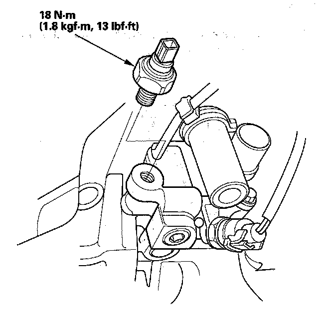

Oil Pressure Sender: Service and Repair
Oil Pressure Switch, Replacement1. Disconnect the oil pressure switch connector, then remove the oil pressure switch.

2. Remove any old liquid gasket from the switch and switch mounting hole.
3. Apply a very small amount of liquid gasket to the oil pressure switch threads, then install the oil pressure switch.
NOTE: Using too much liquid gasket may cause liquid gasket to enter the oil passage or the end of the new oil pressure switch.